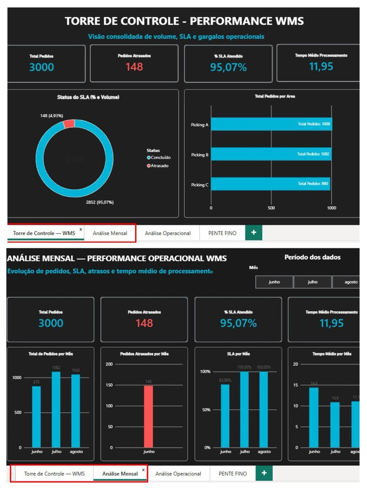
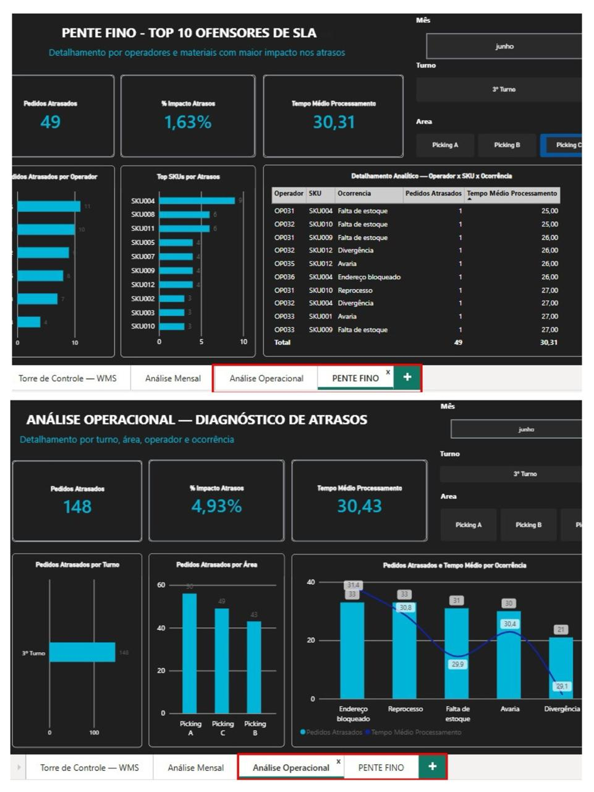

EXPERTISE EM NEGÓCIO & TECNOLOGIA
Unindo mais de 20 anos de vivência logística às novas tecnologias de dados
Uma solução desenhada por quem entende as dores reais do chão de fábrica e do Centro de Distribuição.
Este projeto nasce da fusão entre mais de 20 anos de experiência prática na gestão de operações logísticas, logística reversa, projetos de WMS e atuação como analista de suporte e sustentação de sistemas, aliada à formação acadêmica em andamento em Análise e Desenvolvimento de Sistemas e especializações contínuas em tecnologia.
O objetivo principal é construir um pipeline de dados robusto e automatizado, capaz de solucionar a falta de visibilidade sobre tempos de processamento, gargalos operacionais e quebras de SLA.
VISÃO ESTRATÉGICA
Engenharia de Dados + Inteligência de Negócio
Aproveitando ferramentas como Python no Google Colab para simulação de carga, Power Query/VBA para ETL resiliente e Power BI com IA para apoio no diagnóstico, este projeto demonstra como a tecnologia acelera a eficiência operacional na prática.
VISÃO EXECUTIVA
Principais indicadores
Indicadores calculados a partir da base operacional tratada no projeto.
TORRE DE CONTROLE & DIAGNÓSTICO
Módulos Analíticos do Power BI
O ecossistema no Power BI foi estruturado em dois níveis de profundidade: uma camada executiva/gerencial para a diretoria e uma camada tática/operacional para supervisão e liderança de turno.
VISÃO GERENCIAL
📊 1. Torre de Controle & Análise Mensal
Objetivo: Leitura executiva imediata em apenas dois dashboards gerenciais para diretoria e gerência. Bate o olho no primeiro dashboard e identifica o volume total de pedidos no Centro de Distribuição, o percentual de sucesso e o SLA (95,07%). O segundo dashboard traz o detalhamento mensal, permitindo filtrar períodos e avaliar a evolução do desempenho da planta.

VISÃO OPERACIONAL
🔍 2. Análise Operacional & Pente Fino
Objetivo: Diagnóstico direto em apenas dois dashboards operacionais para o gestor e supervisor de chão de fábrica. Neles, a liderança rastreia com exatidão o turno (1º, 2º ou 3º), a área (Picking A, B ou C), o motivo do atraso, o código do SKU e o operador responsável, permitindo uma tomada de ação e correção imediata.

PROBLEMA DE NEGÓCIO
Transformar dados operacionais em diagnóstico
O projeto parte de uma situação real simulada em operações de Logística/WMS:
Grande volume de registros operacionais gerados diariamente, mas pouca visibilidade consolidada sobre desempenho real, SLA, atrasos e produtividade de equipe.
A proposta deste pipeline automatizado é eliminar a digitação manual, padronizar as bases com Power Query/VBA e disponibilizar métricas confiáveis para tomada de decisão imediata.
FOCO DA ANÁLISE
Onde estão os desvios?
O projeto permite analisar os pedidos por turno, área, status, mês e ocorrência, facilitando a identificação pontual dos gargalos operacionais que exigem ação corretiva.
ANÁLISE OPERACIONAL
Indicadores que ajudam a explicar a operação
SLA
Monitoramento do percentual de pedidos processados dentro do tempo definido.
Atrasos
Identificação e acompanhamento dos pedidos que ultrapassaram o SLA.
Tempo de processamento
Análise do tempo médio de ciclo (Lead Time) entre início e término, atualmente em 11,95 minutos.
Ocorrências
Mapeamento das inconsistências registradas na operação e sua relação direta com os custos e prazos.
ENTREGÁVEIS
O que o projeto demonstra
Geração de Dados (Mock Data)
Criação automatizada de massa de testes estressada com 3.000 registros via Python no Google Colab.
Tratamento de Dados (ETL)
Processo de limpeza, tratamento e padronização dos dados utilizando Power Query no Excel.
Painel e Automação VBA
Desenvolvimento de macros com botões para atualização automática dos dados e indicadores.
Dashboard Power BI
Visualização executiva e tática dos principais indicadores organizados por dimensões operacionais.
Analytics com Python & SQL
Aplicação de scripts e consultas estruturadas para exploração, validação e auditoria da base.
Processamento em Nuvem (Databricks)
Estruturação do ambiente de Big Data para simular processamento analítico em escala com PySpark/SQL.
IA Generativa Aplicada
Utilização do Google Gemini como suporte na construção do código, documentação e análise de causa-raiz.
Repositório GitHub
Código-fonte, documentação técnica e histórico de versões organizados em repositório público.
STACK TÉCNICO
Da base operacional ao Analytics
ARQUITETURA DE DADOS
Fluxo do pipeline de dados
A jornada do dado desde a geração sintética até a Inteligência Artificial e tomada de decisão.
Python (Google Colab)
→
Excel / Power Query (M)
→
VBA / Macro
→
Power BI (DAX)
→
Python / SQL / Databricks
→
IA (Gemini)
APLICAÇÃO GERENCIAL
Da informação para a ação operacional
O objetivo não é apenas criar gráficos, mas impulsionar a tomada de decisão no chão de fábrica.
A estrutura foi desenvolvida para atender tanto à visão macro da diretoria quanto à necessidade pontual do supervisor de turno. Com a base automatizada, em menos de um minuto o gestor passa do indicador global para o apontamento exato da falha.
Fluxo simples de execução operacional: O analista ou auxiliar baixa o extrato do WMS no diretório do projeto, abre a planilha principal com macro (WMS_Logistics_Analytics.xlsm), clica em "Atualizar Indicadores" e depois em "Salvar". Em seguida, basta atualizar o Power BI para que toda a Torre de Controle reflita os novos dados.
Embora demonstrado com uma base trimestral de 3.000 pedidos, a arquitetura é totalmente escalável para rodar com frequências mensais, diárias ou acompanhamento intraday (hora a hora), dependendo da necessidade da operation.
RESULTADO PRÁTICO
Ação corretiva sem perda de tempo
Em vez de procurar manualmente entre dezenas de operadores e milhares de registros, a ferramenta indica de imediato qual operador, qual turno, qual área e qual SKU específico está com desvio, permitindo feedback direto e ajuste imediato da operação.
PROJETO COMPLETO
Explore o projeto no GitHub
Acesse diretamente o código-fonte, scripts Python, macros VBA, arquivo do Power BI e documentação técnica.
Acessar GitHub ↗ Abrir Python / Colab ↗ Abrir Excel / VBA ↗ Abrir Power BI ↗ Abrir IA / Prompts ↗ Abrir SQL ↗ Abrir Databricks ↗